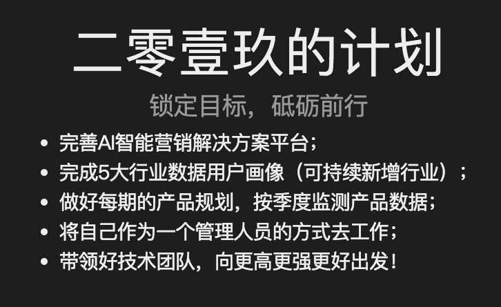
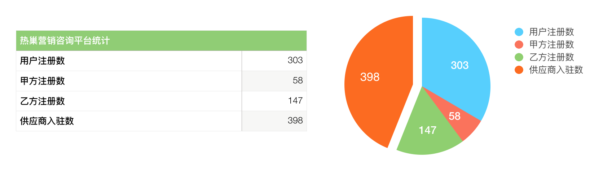
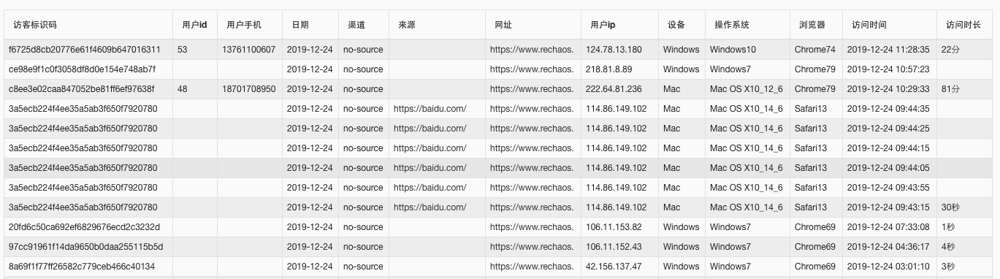

Your browser doesn't support the features required by impress.js, so you are presented with a simplified version of this presentation.
For the best experience please use the latest Chrome, Safari or Firefox browser.
2019工作总结
Created by Acking
2019-12-22

从coder转为manager，感觉做了很多事，收获很多，却觉得总结很难写。于是我先看了看去年的总结。
年度工作概述 · 一
(=´∀｀) 滚动向下浏览 (´∀｀=)
年度工作概述 · 二
(=´∀｀) 滚动向下浏览 (´∀｀=)
年度工作概述 · 三
(=´∀｀) 滚动向下浏览 (´∀｀=)
年度工作概述 · 四
(=´∀｀) 滚动向下浏览 (´∀｀=)
技术管理
- 敏捷开发模式
- 每周使用OmniPlan更新开发任务
- 使用项目管理平台进行任务追踪
- 服务器管理&维护
- 每周部门培训
各项目数据 · 平台数据


各项目数据 · 数据汇总
- 热巢营销咨询平台
- 首页、供应商匹配、营销数据监控、营销咨询服务、关于热巢
- 供应商、AI智能供应商匹配、营销工具、行业数据报告
- 数据报告
- 中小型企业、九百、南京东路、南京西路、百威-鹅岛、雪花秀等
- 软件著作权（4个）
- 热巢社交网络用户画像分析平台
- 热巢全网关键词管理平台
- 热巢KOL画像分析平台
- 热巢一站式营销咨询平台
- 开发文档（41篇）
带团队
带团队其实挺难的，尤其是在创业公司。
做人、做事、沟通
每个人都很努力，但努力不一定就有成果，方向跟方法有时候也很重要。
经历了一年的时间，意识上面有所转变
工作不足之处
- 技术团队每周培训质量不够高，2020年有待改进
- 服务器集群利用率不够高，服务器集群整体比较混乱，需要探讨是否要调整服务器
- 数据报告没有做到完全自动化，从采集到输出
- 沟通不足，加强团队沟通和部门沟通
新年工作计划
- 完善热巢平台中各个模块功能
- 完成五大行业中其他3个行业标准报告，并优化行业报告内容
- 推动出海入海官网开发
- 规划及制定出海入海平台Dashboard的开发
- 制定标准的数据报告输出方案
THE END
二零贰零加油!
Thank you！